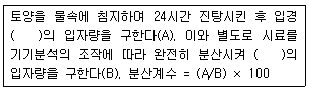
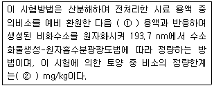
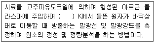
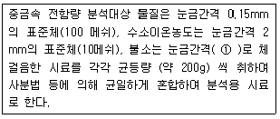
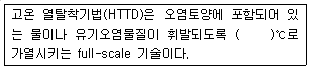
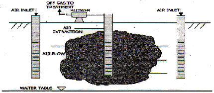
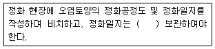
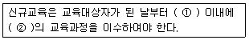

토양환경기사 (2011-10-02 기출문제)
1과목: 토양학개론
1. 모래에 지하수를 장기간 중력 배수시켰을 때, 모래의 비산출률이 0.15 이고 모래의 공극율이 0.53 라면 비보유율은?
- 0.06
- 0.55
- 0.25
- 0.38
(정답률: 82%)

2. 점토광물의 표면저하에 관한 설명으로 가장 적합한 것은?
- 일반적으로 점토광물이나 유기물은 음전하에 비해 양전하를 절대적으로 많이 가지므로 토양은 순 양전하를 띤다.
- 영구전하는 토양의 pH의 영향을 많이 받는 전하이다.
- pH가 낮은 조건에서는 음전하가 생성되는 반면, pH가 높은 조건에서는 과량의 양전하가 생성되는데 이와 같은 전하를 통틀어서 고정전하라 한다.
- 점토광물을 분쇄하여 분말도를 높이면 음전하가 많아진다.
(정답률: 32%)
3. 토양 오염물질 중 BTEX 구성성분이 아닌 것은?
- Xylene
- Ethylena
- Benzene
- Toluene
(정답률: 50%)
4. 토양수의 압력이 1,000 bars일 경우 pF로 환산하면 얼마가 되는가?
- 약 4
- 약 5
- 약 6
- 약 7
(정답률: 40%)
5. 지하수 및 대수층과 관련된 용어 중 " 자유면 대수층에서 지하수면의 단위 상승 혹은 강하에 의해 단위 면적을 통해 자유면 대수층의 저류지하수로부터 유입 혹은 유출되는 물의 부피" 를 뜻하는 것은?
- 수리전도도
- 비저류계수
- 수두구배
- 비산출율
(정답률: 77%)
6. NAPLs에 관한 설명으로 옳지 않은 것은?
- 물에 쉽게 용해되지 않고 섞이지 않아 자연상에서 물과 분리된 유체의 형태로 존재하는 것을 말한다.
- TCE는 LNAPL에 해당된다.
- 톨루엔은 LNAPL에 해당된다.
- Chlorophenols은 DNAPL에 해당된다.
(정답률: 74%)
7. 다음은 Puri 분산계수에 관한 설명이다. ( )안에 공통으로 알맞은 것은?

- 0.2 mm 이하
- 0.02mm 이하
- 0.002mm 이하
- 0.0002mm 이하
(정답률: 50%)
8. 3층형 광물(2:1형 기본구조 = 한층의 Al 8면체를 Si 4면체가 양쪽에서 샌드위치처럼 싸서 3층구조를 이룸)을 가진 대표적인 점토광물은?
- Kaolinite
- Halloysite
- Montmorillonite
- Oxizonite
(정답률: 65%)
9. 다음 중 생태계 위해성 평가단계(4단계)와 가장 거리가 먼 것은?
- 문제의 구체화
- 복원성 평가
- 유해인자-반응관계에 대한 생태학적 영향
- 위해도 결정
(정답률: 15%)
10. 다음 토양목에 관한 설명과 가장 거리가 먼 것은?
- Verisol은 유기물함량이 높은 표토가 검은 빛의 토양으로 화산재 토양이 해당한다.
- Oxisol은 풍화와 용탈이 매우 심하게 일어나는 고온 다습한 열대기후지역에서 발달한다.
- Entisol은 토양의 발달과정이 거의 진행되지 않은 토양이다.
- Ultisol은 습한 지역에서도 발달하며, 저염기포화도를 가진다.
(정답률: 74%)
11. 지하수 유동의 기본법칙인 Darcy의 법칙에 관한 설명으로 옳지 않은 것은?
- 지하수의 흐름 속도는 수두 구배에 비례한다는 경험법칙으로 흐름은 층류여야 한다.
- 투수성 기질로 채워진 원통을 통해 나오는 유량은 수두 차에 반비례한다.
- 투수성 기질로 채워진 원통을 통해 나오는 유량은 거리에 반비례한다.
- 투수성 기질로 채워진 원통을 통해 나오는 유량은 흐름의 단면에 비례한다.
(정답률: 74%)
12. 오염물질과 토양과의 상호반응인 흡착에 관한 설명으로 가장 거리가 먼 것은?
- 용질이 액상과 토양입자 경계면 사이에서 분배될때 일어난다.
- 오염물질과 토양 상호반응은 용액 중 오염물질이 정전기적 인력에 의해 토양입자의 표면과 결합할 때 화학반응이 일어난다.
- 화학반응은 토양 입자 표면의 성질, 오염물질 침출액의 화학ㆍ물리적 성질에 따라 다양하다.
- 음이온은 특별히 결정된 방법으로 토양입자에 흡착하며, 음이온 흡착은 원자가, 결정성, 수화반경 등이 결정적 인자로 작용한다.
(정답률: 73%)
13. 토양침식을 물에 의한 침식의 진행 정도에 따라 분류할 때 거리가 먼 것은?
- 주상 침식
- 면상 침식
- 세류 침식
- 협곡 침식
(정답률: 58%)
14. 오염물 확산 및 처리에 중대한 영향을 미치는 오염지역의 토양 특성으로 가장 거리가 먼 것은?
- 토양 내 유기물질 함량
- 토양의 함수율
- 토양의 pH 및 알칼리도
- 토양의 헨리(공기/물 투수계수)지수
(정답률: 58%)
15. 다음 중 전지구적인 물 분포 부피비율 크기로 옳은 것은?
- 빙하, 만년설 ＞ 지하수(지하 약 4km) ＞ 강 ＞ 토양 수분
- 지하수(지하 약 4km) ＞ 빙하, 만년설 ＞ 토양수분＞ 강
- 지하수(지하 약 4km) ＞ 빙하, 만년설 ＞ 강 ＞ 토양 수분
- 빙하, 만년설 ＞ 지하수(지하 약 4km) ＞ 토양수분＞ 강
(정답률: 79%)
16. 수은(Hg)에 관한 설명으로 옳지 않은 것은?
- 토양 중 수은이 어떤 반응을 하는가는 주로 그것에 존재하는 수은의 형태에 따라 규정된다.
- 방향족 수은화합물의 독성이 가장 높고, 무기염의 수은과 금속수은이 연결된 알킬화합물 순으로 독성이 낮다.
- 수은은 염소와 칼슘소다의 전기분해에 의해 전극 혹은 플라스틱 생산의 촉매로서도 이용된다.
- 수은화합물과 토양 성분은 강한 상호작용을 하기 때문에 토양중 수은이 휘산 형태 이외로의 방출은 통상 지극히 작다.
(정답률: 36%)
17. 어느 지역 토양시료에 대해 공극률 측정결과가 20%였다. 시료 내 수분부피와 공기부피는 각각 16cm3, 4cm3 였다면 현장에서 채취한 토양시료의 전체부피(cm3)는?(단, 공극은 수분과 공기로만 차 있다고 가정함)
- 50
- 100
- 150
- 200
(정답률: 74%)
18. 1 m3의 건조모래를 가득 채운 용기에 물을 부어 공극이 완전히 채워졌을 때 사용한 물의 양은 240 L이었다. 배수용 꼭지를 틀어 장기간 물을 중력 배수시켰을 때 210L 가 중력 배수되었다. 이 때 모래의 비보유율은?
- 0.03
- 0.⑤
- 0.10
- 0.15
(정답률: 53%)
19. 토양오염은 오염물질의 특이성에 따라 다르게 나타난다. 유기오염물질의 특성 인자와 가장 거리가 먼것은?
- 용해도적
- 증기압
- 옥탄올/물 분배계수
- 분해상수
(정답률: 79%)
20. 어떤 토양의 양이온 교환용량이 17.5cmolc/kg, 그중 Al 과 H이온이 5.2cmolc 존재할 때 염기포화도(%)는?
- 63.8
- 70.3
- 75.9
- 80.6
(정답률: 79%)
2과목: 토양 및 지하수 오염조사기술
21. 석유계총탄화수소(TPH)를 포함한 시료의 보존기준으로 가장 적합한 것은?
- 채취한 시료를 즉시 실험할 수 없을 경우 0~4℃ 냉암소에서 보존하고 20일 이내에 추출하여야 하며, 시료채취일로부터 40일 이내에 분석하여야 한다.
- 채취한 시료를 즉시 실험할 수 없을 경우 0~4℃ 냉암소에서 보존하고 20일 이내에 추출하여야 하며, 시료채취일로부터 60일 이내에 분석하여야 한다.
- 채취한 시료를 즉시 실험할 수 없을 경우 0~4℃ 냉암소에서 보존하고 14일 이내에 추출하여야 하며, 시료채취일로부터 40일 이내에 분석하여야 한다.
- 채취한 시료를 즉시 실험할 수 없을 경우 0~4℃ 냉암소에서 보존하고 14일 이내에 추출하여야 하며, 시료채취일로부터 60일 이내에 분석하여야 한다.
(정답률: 84%)
22. 저장물질이 없는 누출검사대상시설의 누출검사방법 중 가압시험법에 사용되는 기구 및 기기에 관한 설명으로 옳지 않은 것은?
- 온도계는 시험압력에 충분히 견딜 수 있는 것으로서 최소 눈금 1℃ 이하를 읽고 기록이 가능해야 한다.
- 압력계는 최소눈금이 시험압력의 10% 이내이고, 이를 읽고 측정압력의 기록이 가능한 것을 사용한다.
- 안전밸브는 0.7 kgf/cm2 이하로 작동되어야 한다.
- 사용가스는 가압매체로 질소 등 불활성가스를 사용한다.
(정답률: 50%)
23. 폴리클로리네이티드비페닐을 기체크로마토그래피로 분석하고자 할 때 다음 중 가장 적합한 검출기는?
- ECD
- FID
- TCD
- FPD
(정답률: 50%)
24. 토양시료 채취방법에 관한 설명으로 가장 적합한 것은?
- 시안, 유기인화합물, 벤조(a)피렌, 석유계총탄화수소, 페놀 등 시험용 시료는 농경지의 경우에는 중심이 되는 1개 지점과 주변 4 방위의1~3 m 거리에 있는 1개 지점씩 총 5개 지점을 선정한다.
- 토양시료채취기가 없을 경우에 유기물질을 조사할 때에는 플라스틱 재질을 사용하고, 중금속의 경우에는 스테인리스강 재질의 모종삽 또는 삽 등과 같은 기구가 적합하다.
- 공장지역ㆍ매립지역ㆍ시가지지역 등 농경지가 아닌 기타지역의 경우는 대상지역의 중심이 되는 1개 지점과 주변 4 방위의 5~10m 거리에 있는 1개 지점씩 총 5개 지점을 선정한다.
- 채취한 토양시료 중 나머지는 입구가 넓은 200mL 이상 용량의 플라스틱병에 가득 담고 마개로 막아 밀봉한 후 냉동상태로 실험실로 운반하여 수분보정용 시료로 사용한다.
(정답률: 77%)
25. "밀폐용기" 에 관한 정의로 가장 적합한 것은?
- 취급 또는 저장하는 동안에 이물질이 들어가거나 또는 내용물이 손실되지 아니하도록 보호하는 용기를 말한다.
- 취급 또는 저장하는 동안에 밖으로부터의 공기 또는 다른 가스가 침입하지 아니하도록 내용물을 보호하는 용기를 말한다.
- 취급 또는 저장하는 동안에 기체 또는 미생물이 침입하지 아니하도록 내용물을 보호하는 용기를 말한다.
- 취급 또는 저장하는 동안에 내용물이 광화학적 변화를 일으키지 아니하도록 방지할 수 있는 용기를 말한다.
(정답률: 80%)
26. 다음은 비소-수소화물생성-원자흡수분광광도법에 관한 설명이다. ( )안에 알맞은 것은?

- ① 수소화주석나트륨, ② 0.001
- ① 수소화붕소나트륨, ② 0.001
- ① 수소화주석나트륨, ② 0.01
- ① 수소화붕소나트륨, ② 0.01
(정답률: 67%)
27. 0.0001N의 NaOH 용액의 pH는?
- 9
- 10
- 11
- 12
(정답률: 44%)
28. 토양환경평가방법 및 절차 단계 중 1단계(기초조사)에서 이루어지는 과정내용과 가장 거리가 먼 것은?
- 조사계획 수립
- 자료조사
- 방문조사
- 청취조사
(정답률: 60%)
29. 다음 유도결합플라스마-원자발광분광법에 의한 카드뮴 분석방법에 관한 설명이다. ( )안에 알맞은 것은?

- 1000 ~ 2000
- 6000 ~ 8000
- 10000 ~ 12000
- 15000 ~ 18000
(정답률: 82%)
30. 6가크롬을 자외선가시선 분광법으로 분석하는 방법에 관한 설명으로 옳지 않은 것은?
- 이 방법에 의한 토양 중 6가크롬의 정량한계는 0.5mg/kg 이다.
- 6가크롬을 디메틸글리옥섬과 반응시켜 생성하는 적자색의 착화물의 흡광도를 540nm에서 측정하여 6가 크롬을 정량하는 방법이다.
- 시료 중 철이 2.5mg이하로 공존할 경우에는 디페닐카바지드 용액을 넣기 전에 5% 피로인산나트륨-10 수화물용액 2mL를 넣어 주면 영향이 없다.
- 시료 중에 잔류염소가 공존하는 경우에는 시료에 수산화나트륨용액(20%)을 넣어 pH 12정도로 조절한 다음 입상활성탄 10% 정도 되게 넣고 자석교반기로 약 30분간 교반하여 여과한 액을 시료로 사용한다.
(정답률: 42%)
31. 다음 중 이온전극법을 이용하여 측정하기에 가장 적합한 성분은?
- 불소
- 아연
- 트리클로로에틸렌
- 폴리클로리네이티드비페닐
(정답률: 70%)
32. 수분함량 측정시 1⑤~110℃ 건조기 안에서의 토양 건조시간은 얼마 이상으로 항량이 될 때까지 건조시켜야 하는가?
- 1시간
- 2시간
- 3시간
- 4시간
(정답률: 85%)
33. 다음 농도표시 중 농도가 상대적으로 가장 낮은 것은? (단, 비중은 1.0 기준)
- 0.1ppm
- 1mg/L
- 100ppb
- 1mg/kg
(정답률: 77%)
34. 다음 시험용 시료의 조제방법에 관한 설명이다. ( ① )안에 가장 적합한 것은?

- 0.075mm의 표준체(200 메쉬)
- 0.⑤mm의 표준체(300 메쉬)
- 0.01mm의 표준체(1500 메쉬)
- 0.0⑤mm의 표준체(300 메쉬)
(정답률: 77%)
35. 토양오염공정시험기준에서 사용하는 용어 등에 관한 설명으로 옳지 않은 것은?
- 가스체의 농도는 표준상태(0℃, 1기압, 상대습도 100%)로 환산 표시한다.
- 실온은 1~35 C로 하며, 찬 곳은 따로 규정이 없는 한 0~15 C의 곳을 뜻한다.
- 제반시험 조작은 따로 규정이 없는 한 상온에서 실시하고 조작 직후 그 결과를 관찰하는 것으로 하고, 온도의 영향이 있는 것의 판정은 표준온도를 기준으로 한다.
- 액체시약의 농도에 있어서 염산(1+2)이라고 되어있을 때에는 염산 1mL와 물 2mL를 혼합하여 조제한 것을 말한다.
(정답률: 87%)
36. 토양시료 중 트리클로로에틸렌, 테트라클로로에틸렌 및 BTEX 등의 물질을 퍼지-트랩 기체크로마토그래피-질량 분석법으로 분석하고자 할 때 시료전처리를 위해 일반적으로 사용하는 용매는?
- 부틸알코올
- 티클로로메탄
- 메틸알코올
- 아세톤
(정답률: 74%)
37. 저장물질이 있는 누출검사대상시설의 기상부의 누출검사 시험법인 미감압 측정방법으로 옳지 않은 것은?
- 시험을 위한 진공속도는 매분 100mmHg 미만이 되도록 한다.
- 매 5분마다 측정된 압력변화값은 자동으로 기록되도록 한다.
- 누출여부에 대한 추가확인을 위하여 마이크로폰 등 추가적인 도구를 사용할 수 있다.
- 압력 안정화 유지시간 이후부터 매 5분마다 60분 또는 70분 동안의 압력변화를 측정한다.
(정답률: 84%)
38. 수온을 냉증기 원자흡수광광도법으로 분석하는 방법에 관한 설명으로 옳지 않은 것은?
- 사료중의 수은을 염화제일주석용액에 의해 원자 상태로 환원시켜 발생되는 수은증기를 측정한다.
- 수은증기를 283.3nm에서 냉증기 원자흡수분광광도법에 따라 정량하는 방법이다.
- 이 시험방법은 냉증기 원자흡수분광광도법을 이용하여 토양의 왕수 추출액에서 수은을 정량하기 워한 방법을 포함한다.
- 이 방법에 따른 정량한계는 0.01mg/kg이다.
(정답률: 32%)
39. 시안을 분석하고자 할 때 다음 중 가장 적합한 분석방법으로만 나열한 것은?
- 자외선가시선 분광법, 이온전극법
- 자외선가시선 분광법, 유도결합플라즈마-원자발광분광법
- 기체크로마토그래피법, 이온전극법
- 원자흡수분광광도법, 유도결합플라즈마-원자발광분광법
(정답률: 57%)
40. 정도관리요소인 검정곡선 중 상대검정곡선법의 내부표준 물질에 관한 설명으로 옳은 것은?
- 상대검정곡선법은 시험 분석하려는 성분과 물리, 화학적으로 성질은 유사하나 시료에는 없는 순수물질을 내부표준물질로 선택한다.
- 상대검정곡선법은 시험 분석하려는 성분과 물리, 화학적으로 성질이 유사하며 시료에 함유된 순수물질을 매부표준물질로 선택한다.
- 상대검정곡선법은 시험 분석하려는 성분과 물리 화학적으로 성질이 다르며 시료에 함유된 순수물질을 내부표준물질로 선택한다.
- 상대검정곡선법은 시험 분석하려는 성분과 물리, 화학적으로 성질이 다르고 시료에 없는 순수물질을 내부표준물질로 선택한다.
(정답률: 83%)
3과목: 토양 및 지하수 오염정화 기술
41. 다음 중 미생물 분해를 목적으로 하는 부분반응벽시스템(Funnel-and-gate system)에 가장 적합한 투수성 벽채 재료는?
- 0가 철
- Alum
- 굴 껍질
- 자갈
(정답률: 65%)
42. 타기술에 비하여 유류 오염물질을 빠른 시간 내에 분해하여 처리할 수 있는 화학적 산화법의 장단점으로 옳지 않은 것은?
- 오염물질을 원위치에서 정화할 수 있다.
- 토양 중의 구성물질과 반응하여 산화제의 소요량이 증가할 수 있다.
- 펜톤 산화시에는 부산물이 발생되지 않는다.
- 투수성이 낮은 토양에서는 오염물지로가 산화제의 접속이 쉽지 않다.
(정답률: 59%)
43. 다음은 열탈착기법에 관한 설명이다. ( )안에 들어갈 온도범위로 가장 적합한 것은?

- 80~120
- 120~200
- 320~560
- 850~1000
(정답률: 67%)
44. 지중 차단벽인 슬러리월의 수평적 배열 구성이 "부분적 하향 설치" 인 경우에 관한 설명으로 옳지 않은 것은?
- 완전 차단보다 설치 가격이 싸다.
- 침출수 발생량 제어에 효과적이다.
- 침출수 이동을 최소화 할 수 있다.
- 지하수 흐름에 대한 정밀한 조사가 필요하다.
(정답률: 60%)
45. 어느 미생물이 염소계 용매는 분해할 수 없지만 메탄을 에너지원으로 하여 분비되는 효소를 이용하여 오염물질을 분해할 경우는 다음 용어 중 어디에 해당하는가?
- 공동대사
- 생물증대
- 자연저감
- 미생물고정화
(정답률: 65%)
46. TCE로 오염된 지하수를 양수하여 포기조 내에서 공기분산법으로 제거하는 경우, 포기조 부피가 750m3 인 처리장에 1일 3000m3의 오염 지하수가 유입된다면 포기 시간은?
- 4시간
- 6시간
- 8시간
- 10시간
(정답률: 47%)
47. 미생물의 종류별 탄소원과 에너지원의 연결로 옳지 않은 것은? (단, 탄소원 - 에너지원)
- 화학합성 자가영양 : CO2 - 유기물의 산화환원반응
- 화학합성 종속영양 : 유기탄소 - 유기물의 산화환원반응
- 광합성 종속영양 : 유기탄소 - 빛
- 광합성 자가영양 : CO2- 빛
(정답률: 65%)
48. 토양증기추출법(Soil Vapor Extraction) 시스템의 구성요소와 가장 거리가 먼 것은?
- 추출정
- 중력선별장치
- 기-액 분리장치
- 배가스 처리장치
(정답률: 60%)
49. 토양경작법에 관한 설명으로 옳지 않은 것은?
- 중금속으로 오염된 토양 처리에 적합하다.
- 오염토양을 복원하기 위하여 넓은 부지가 필요하다.
- 휘발성 유기물질의 농도는 생분해보다 휘발에 의해 감소된다.
- 유기용매가 대기 중으로 방출되어 대기를 오염시키기 때문에 방출되기 전에 미리 처리해야 한다.
(정답률: 50%)
50. 오염토양의 처리방법인 토양세척의 주요 6개 공정에 해당되지 않는 것은?
- 흡착
- 분리
- 처리수 정화
- 미세토양 처리
(정답률: 72%)
51. 오염토양 열처리 프로세스의 종류 중 장치용적에 비해 비교적 넓은 열전달 표면적이 존재하며 같은 용량의 장치에 비해 장치가 작고 열전달효율이 높으나, 고형물의 온도가 최대허용 가능한 유체의 온도에 의해 제한되는 것은?
- 로터리탈착장치
- 열스크루
- 유동상탈착장치
- 마이크로파 탈착장치
(정답률: 80%)
52. White Rot Fungus 기술의 제약조건과 가장 거리가 먼 것은?
- 중간물질 형성
- 화학적 흡착
- 박테리아의 수
- 독성물질
(정답률: 60%)
53. Bioventing 공법을 적용하여 석유화학물질인 헥산(C6H14)을 생물학적으로 분해하고자 한다. 산소의 주입량이 2.0mole O2/day일 경우 이 오염물질의 생물학적 분해 속도는?
- 1.7 mole O2/day
- 18.1 mole O2/day
- 42.5 mole O2/day
- 258 mole O2/day
(정답률: 47%)
54. 다음 그림은 오염토양정화기술의 한 종류를 나타낸 것이다. 이 공정으로 가장 적합한 것은?

- Permeable Reactive Barriers
- Air Sparging
- Natural Attenuation
- Bioventing
(정답률: 67%)
55. 토양오염 처리기술의 개념에 관한 설명으로 옳지 않은 것은?
- Biodegradation - 미생물을 활용하여 유기오염물질을 분해
- Dual Phase Extraction - 유기오염물질과 중금속을 동시에 제거하기 위해 고압의 수증기를 주입
- Pneumatic Fracturing(PF) - 통기성이 낮거나 압밀된 토양에 균열을 증가시키기 위해 지표 아래로 압축공기 주입
- Vitrification - 오염토양을 전기적으로 용융시켜 용출 특성이 낮은 결정구조로 만듦
(정답률: 56%)
56. 다음 중 식물정화법의 주처리 기작으로 가장 거리가 먼 것은?
- 식물에 의한 추출
- 식물에 의한 분해
- 식물에 의한 확산
- 식물에 의한 안정화
(정답률: 69%)
57. 전기동력학적 공정효율을 높이기 위한 방법으로 가장 거리가 먼 것은?
- 음극 쪽에서 발생하는 중금속의 수산화물 침전물 형성을 방지하고 침전물의 용해도를 증가시키기 위해 음극 전해질 용액에 아세트산과 같은 화학물질을 주입함
- 오염물질의 이동도를 증가시키기 위해 pH와 제타 전위를 조절하고 탈착반응을 촉진시키며 전기삼투유량을 증가시키기 위해 양극과 음극 전해질 용액의 화학 조절을 실시함
- 오염물질의 흡착능력을 향상시키기 위해 이온교환능이 높은 벤토나이트, 몬모릴로나이트와 같은 점토광물의 함량을 증가시킴
- 토양입자와 경쟁하며 중금속 오염물질에 대해 용해서 착화합물을 형성할 수 있는 암모니아, citrate, EDTA 등과 같은 화학제를 투여함
(정답률: 44%)
58. 공기분사법(air sparging)의 적용에 관한 설명으로 옳지 않은 것은?
- 오염확산의 위험과 균질한 공기분포를 방해하는 불균질 기질은 적용이 어렵다.
- 오염확산이 위험이 적은 피압대수층은 효과적으로 적용 가능하다.
- 공기의 이동경로 생성을 방해하는 낮은 투수도의 기질(K＜10-3 cm/s)에는 적용이 어렵다.
- 휘발성이 높거나 생분해 가능성이 높은 오염물질의 처리에는 효율적이다.
(정답률: 74%)
59. 유류로 오염된 산성토양을 토양경작으로 처리하기 위해 중화하려고 한다. 이 때 필요한 탄산석회(CaCO3)의 양은? (단, 대상 토양의 교환산도 50 meq/kg, 포장 계수 1.5, 대상지역의 토양량 1ton)
- 1.50 kg
- 1.67 kg
- 2.50 kg
- 3.75 kg
(정답률: 34%)
60. TCE(Trichloroethylene)로 오염된 지하수를 오존으로 처리하고자 한다. 처리대상 지하수로 예비실험을 한 결과 1.4 mg/L-min의 오존으로 1시간 처리 시 환경기준에 적합한 제거율을 보였다. 지하수 오염농도가 150 mg/L 이고 처리해야 할 지하수의 유량이 1017 L/min 일 경우 환경기준에 적합하도록 처리하기 위한 최소 오존 필요량은?
- 약 1⑤ kg/day
- 약 118 kg/day
- 약 123 kg/day
- 약 138 kg/day
(정답률: 36%)
4과목: 토양 및 지하수 환경관계법규
61. 측량ㆍ수로조사 및 지적에 관한 법률(구, 지적법)상 지목이 과수원(1지역)인 경우 6가 크롬의 토양오염대 책기준(mg/kg)으로 옳은 것은?
- 3
- 5
- 10
- 15
(정답률: 47%)
62. 토양환경보전법령상 오염토양 정화방법으로 가장 거리가 먼 것은?
- 미생물을 이용한 오염물질 분해 등 생물학적 처리
- 오염물질의 차단ㆍ분리추출ㆍ세척처리 등 물리ㆍ화학적 처리
- 오염물질의 위생적 매립처리
- 오염물질의 소각ㆍ분해 등 열적처리
(정답률: 67%)
63. 다음 중 토양오염도검사수수료가 가장 비싼 항목은?
- 카드뮴
- 유기인
- 수은
- 불소
(정답률: 72%)
64. 하천 인근에서의 지하수개발ㆍ이용허가를 위한 "대통령령이 정하는 범위" 기준으로 옳은 것은?
- 하천법에 따른 하천구역의 경계로부터 300m 이내의 지역
- 하천법에 따른 하천구역의 경계로부터 500m 이내의 지역
- 하천법에 따른 하천구역의 경계로부터 750m 이내의 지역
- 하천법에 따른 하천구역의 경계로부터 1km 이내의 지역
(정답률: 44%)
65. 속임수 그 밖의 부정한 방법으로 토양관련전문기관의 지정을 받거나 토양정화업의 등록을 한 자에 대한 벌칙기준으로 옳은 것은?
- 5년 이하의 징역 또는 3천만원 이하의 벌금
- 2년 이하의 징역 또는 1천만원 이하의 벌금
- 1년 이하의 징역 또는 500만원 이하의 벌금
- 300만원 이하의 벌금
(정답률: 79%)
66. 지하수에 관한 조사업무를 대행할 수 있는 지하수 관련조사전문기관으로 가장 거리가 먼 것은?
- 「과학기술분야 정부출연연구기관 등의 설립ㆍ운영 및 육성에 관한 법률」규정에 의하여 설립된 한국지질 자원연구원
- 「한국광물자원공사법」에 따른 한국광물자원공사
- 「환경기술개발 및 지원에 관한 법류」에 의한 한국환경산업기술원
- 「과학기술분야 정부출연연구기관 등의 설립 ㆍ 운영 및 육성에 관한 법률」규정에 의하여 설립된 한국건설기술연구원
(정답률: 63%)
67. 다음 중 토양오염물질과 가장 거리가 먼 것은?
- 폴리클로리네이티드비페닐
- 납
- 불소화합물
- 안티몬
(정답률: 67%)
68. 토양관련전문기관은 토양오염검사신청서를 받은 날부터 며칠이내에 시료채취 또는 누출검사를 하여야 하는가? (단, 특정토양오염관리대상시설 기준)
- 5일 이내
- 7일 이내
- 10일 이내
- 14일 이내
(정답률: 67%)
69. 다음 중 토양정화업(변경)등록 신청서의 처리기관과 등록 및 변경등록 시 처리기간으로 가장 적합한 것은?
- 지방환경청장, 등록 7일, 변경등록 10일
- 지방환경청장, 등록 10일, 변경등록 7일
- 환경부장관, 등록 7일, 변경등록 10일
- 환경부장관, 등록 10일, 변경등록 7일
(정답률: 58%)
70. 토양오염도 검사 수수료 중 시료채취에 관한 설명으로 옳은 것은?
- 91,900원/공(관측공이 설치되어 있는 지점에서 시료를 채취하는 경우에는 관측공 당 시료채취비의 25%를 적용)
- 91,900원/공(관측공이 설치되어 있는 지점에서 시료를 채취하는 경우에는 관측공 당 시료채취비의 50%를 적용)
- 71,900원/공(관측공이 설치되어 있는 지점에서 시료를 채취하는 경우에는 관측공 당 시료채취비의 25%를 적용)
- 71,900원/공(관측공이 설치되어 있는 지점에서 시료를 채취하는 경우에는 관측공 당 시료채취비의 50%를 적용)
(정답률: 59%)
71. 지하수의 수질기준 항목(특정유해물질)이 아닌 것은? (단, 공업용수로 사용하는 경우)
- 페놀
- 납
- 불소
- 시안
(정답률: 39%)
72. 다음의 지하수 수질기준 설정항목 중 수질기준으로 옳지 않은 것은?
- 톨루엔 : 생활용수로 이용 - 1.0mg/L 이하
- 트리클로로에틸렌 : 생활용수로 이용 - 0.⑤mg/L이하
- 수은 : 공업용수로 이용 - 0.001mg/L 이하
- 6가 크롬 : 공업용수로 이용 - 0.1mg/L 이하
(정답률: 54%)
73. 다음은 토양정화업자의 준수사항이다. ( )안에 들어갈 내용으로 옳은 것은?

- 1년간
- 2년간
- 3년간
- 5년간
(정답률: 77%)
74. 다음 중 특정토양오염관리대상시설과 가장 거리가 먼 것은?
- 석탄류의 채광 및 저장시설
- 유독물의 제조 및 저장시설
- 석유류의 제조 및 저장시설
- 송유관시설
(정답률: 65%)
75. 다음 중 토양보전대책계획의 수립에서 반드시 포함되지 않아도 되는 사항은?
- 오염토양개선사업의 종류 및 방법
- 단위사업별 주체 및 사업기간
- 단위사업별 참여 기술인력의 구성
- 총소요비용 및 조달방안
(정답률: 54%)
76. 토양정화업의 등록요건 중 장비기준으로 거리가 먼 것은?
- 휴대용 가스측정장비 1식(휘발성 유기화합물질, 산소, 이산화탄소 및 메탄의 측정이 가능할 것)
- 현장용 수질측정기 1식(수소이온농도, 수온, 전기 전도도, 용존산소 및 산화환원전위의 측정이 가능할 것)
- 지하수위분석기 1대(깊이 150m 이상 측정이 가능할 것)
- 시료채취기 1대(깊이 6m 이상 시료채취가 가능할 것)
(정답률: 65%)
77. 지하수를 생활용수로 이용하는 경우 질산성질소의 지하수 수질기준(mg/L)으로 옳은 것은?
- 1 이하
- 10 이하
- 15 이하
- 20 이하
(정답률: 57%)
78. 지하수를 오염시키거나 자연생태계를 해할 우려가 있는 경우로 규정에 의한 취수량의 제한을 준수하지 아니한 자에 대한 벌칙기준으로 옳은 것은?
- 3년 이하의 징역 또는 2천만원 이하의 벌금
- 2년 이하의 징역 또는 1천만원 이하의 벌금
- 1년 이하의 징역 또는 500만원 이하의 벌금
- 200만원 이하의 벌금
(정답률: 54%)
79. 다음은 국립환경인력개발원장이 개설하는 토양환경관리의(집합)교육과정 이수사항이다. ( )안에 알맞은 것은?

- ① 6월, ② 12시간
- ① 1년, ② 12시간
- ① 6월, ② 24시간
- ① 1년, ② 24시간
(정답률: 70%)
80. 다음 중 지하수에 함유된 오염물질을 제거ㆍ분해 또는 희석하여 지하수의 수질개선을 하는 사업은?
- 지하수영향조사업
- 토양정화업
- 지하수정화업
- 지하수개발ㆍ이용시공업
(정답률: 70%)